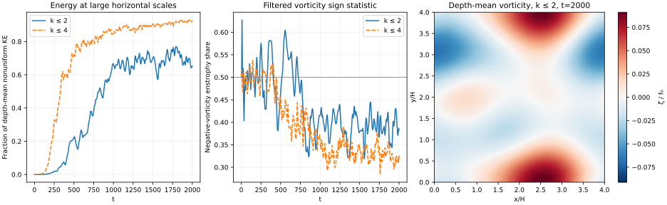

Completed · original potential-temperature formulation · t=0–2000
The original compressible run is complete
This is the potential-temperature compressible case, not the new total-energy run. Its filtered depth-mean flow has a cyclonic bias, as does the completed anelastic control. These results do not demonstrate the sought compressible-anticyclone / anelastic-cyclone split.
Interpretation limit: the reconstructed energy deficit reaches 29.6% of cumulative bottom heating. The maximum mean-temperature-profile departure is 48.5%, and part of the mean cap profile is unstable at the endpoint. The atmosphere has not reached thermal equilibrium. Numerical mixing is the leading explanation for the energy deficit; a direct termwise attribution has not been made. The separate total-energy experiment is testing the formulation change.
256² × 80 · 4 × 4 × 1 periodic horizontal box · Ω=3, full rotation vector at 67.5°N · β=0 · no jet · WENO9, no explicit closure. Starts from rest with weak, fixed-seed thermal noise. Heating is constant in time and uniform across the bottom; there is no ongoing stochastic forcing. Time is nondimensional.
Watch the completed anelastic control through t=2000 →
Vorticity and absolute tracer concentration
Vorticity is above absolute tracer concentration. The three columns show z/H=0.19375, 0.49375 and 0.89375. Positive ζ/f₀ is cyclonic. All color mappings are fixed across time; vorticity limits are fixed separately for each depth.
401 saved states, t=0–2000 at intervals of 5; playback at 12 frames/s. Absolute tracer uses a fixed asinh contrast scale centered at C=0.1. Each panel prints the actual plane mean and RMS variation. These colors are not interchangeable with other gallery entries; consult their labeled scales.
Comparison with the completed anelastic control
| Diagnostic at t=2000 | Compressible: potential temperature | Anelastic |
|---|---|---|
| Depth-mean KE fraction in modes k≤2 | 65.2% | 90.6% |
| Zonal-u fraction of depth-mean KE | 20.4% | 41.8% |
| Anticyclonic enstrophy share, k≤2 | 38.2% | 33.0% |
| Vorticity skewness, k≤2 | +0.77 | +1.06 |
| Anticyclonic enstrophy share, k≤4 | 32.6% | 27.1% |

For the compressible case, the t=1500–2000 averages are 69.2% low-mode KE and 38.9% anticyclonic enstrophy share at k≤2. Its positive-sign bias is not confined to the last snapshot.
Here k is Fourier radius in cycles per box. The analyzed velocity is the reference-density-weighted depth mean, with its spatially uniform part removed. Anticyclonic share is the fraction of squared filtered vorticity in negative-vorticity cells, not vortex count or net circulation. The periodic domain has zero net vertical vorticity. Energy concentration and morphology alone do not establish an inverse cascade or a single persistent LSV. The two cases have evolved different thermal states, so this table is a descriptive comparison, not an isolated causal attribution to compressibility.
How much energy is at small horizontal scales?
A separate endpoint spectrum uses the full three-dimensional flow, rather than only its depth mean. At t=2000, 7.08% of its kinetic energy lies at horizontal wavelengths ≤8 grid spacings, and 1.69% at wavelengths ≤4 grid spacings. Modes k≤2 contain 53.4%.
The spectrum transforms sqrt(face density) times each native staggered velocity, then sums over depth and components. Its total recovers the saved-field kinetic energy, 4.645755854, matching the run diagnostic to better than 10⁻⁹ relative. This is a density-weighted horizontal spectrum at one time; it does not establish vertical resolution or a resolved inertial range. Strong fine-scale vorticity need not imply that most kinetic energy is at those scales. Download the spectrum.
Tracer contrast after mixing
The supplementary movie shows C minus each instantaneous horizontal-plane mean. One amplitude scale is fixed across all depths and times; there is no per-frame variance normalization.
At t=2000, the three planes have RMS concentration variations of 6.83×10⁻⁵, 7.48×10⁻⁵ and 2.51×10⁻⁴. The increased display contrast makes these small remaining variations visible without changing their values.
Fidelity and provenance
The run finished in 10h45m of allocated A100 time. Peak Mach reached 0.435 during the run and was 0.331 at the endpoint; final mass-weighted RMS Mach was 0.0506. Endpoint relative mass error was 3.3×10⁻¹⁶.
The final reconstructed energy residual is −296.268 units, or −29.63% of gross bottom heat. Explicit top heat exchange and cap cooling are already included in that ledger. This percentage is not a fraction of the atmosphere’s total energy. The minimum sampled cap-mean N² at t=2000 is −0.320, and the maximum relative departure of the mean temperature profile is 0.485.
Analysis summaryStructure time seriesRun configurationMovie scales and hashesFrozen simulation sourceEnergy-budget testsAnelastic control